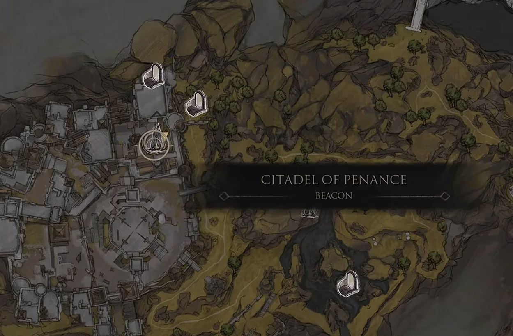
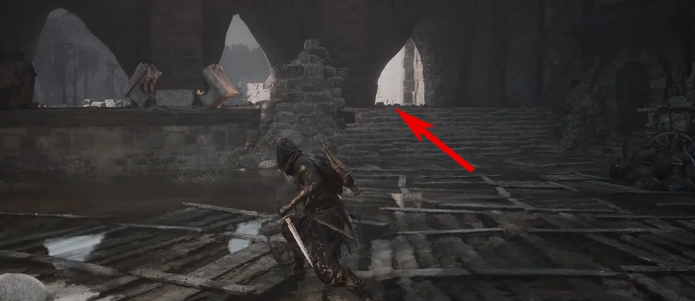
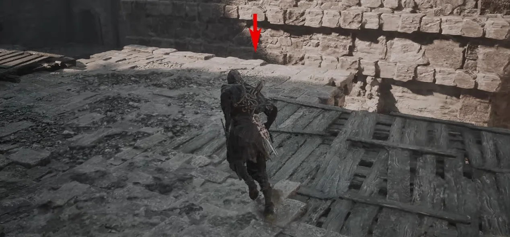
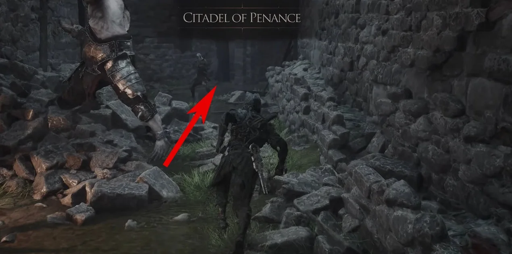
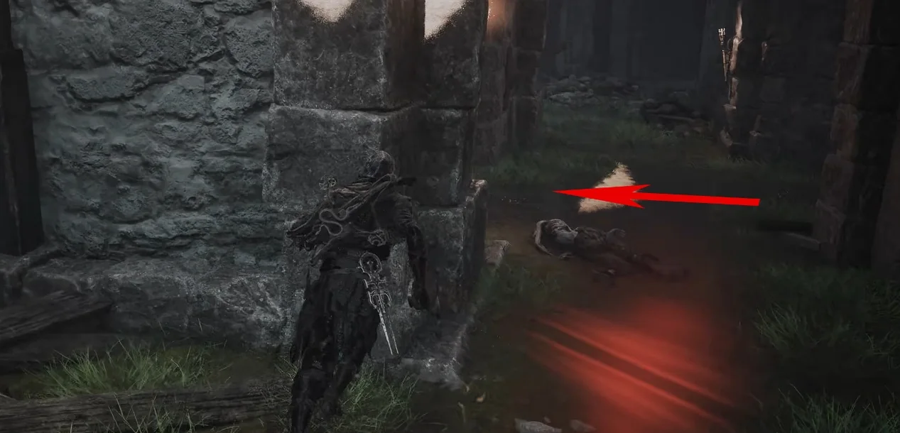
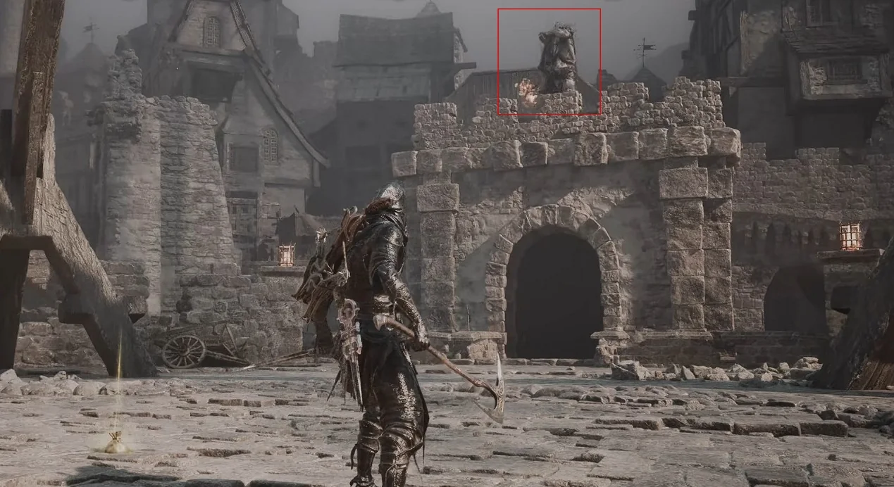
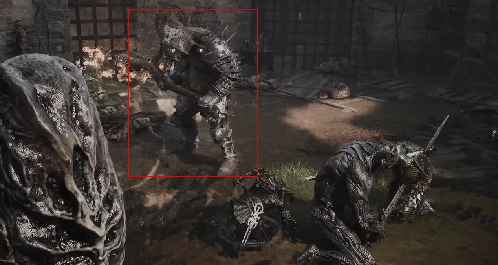
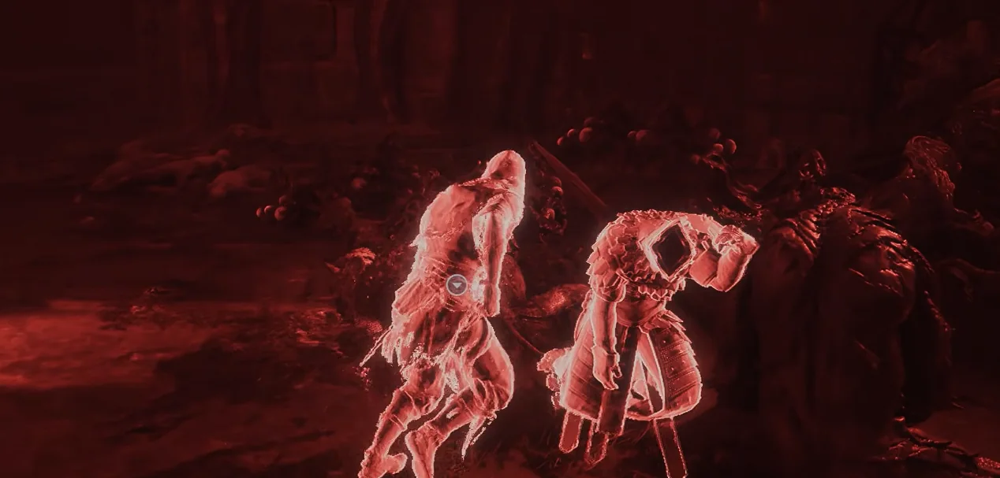
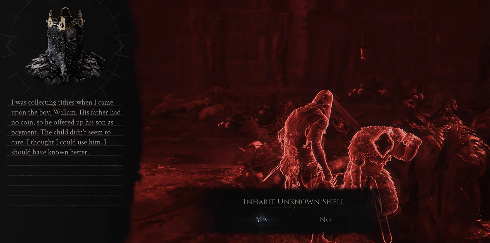

Shell acquisition · Fainweald
How to get
Eredrim
Start from Citadel of Penance Beacon, take the upper route into the Citadel, then clear the final enemy encounter to reveal the Shell.
- Region
- Fainweald
- Starting point
- Citadel of Penance Beacon
- Unlock
- Eredrim

Route 01Travel to Citadel of Penance Beacon.

Route 02Take the upper path from the Beacon and enter the Citadel of Penance through the marked opening.

Route 03At the platform shown, drop down through the indicated opening.

Route 04Continue forward through the ruins, following the marked path toward the left turn.

Route 05Turn left at the arrow and enter the passage leading to the elevator.

Route 06Ride the elevator up and wait in the open area beyond it. An armored enemy drops in from the opposite side.

Route 07Defeat the enemy to complete the encounter. Keep the fight in the open space and avoid being cornered by the surrounding ruins.

Route 08After the encounter, the Shell becomes available in the cleared area.

Route 09Interact with the body and choose Inhabit Unknown Shell to unlock Eredrim.